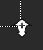
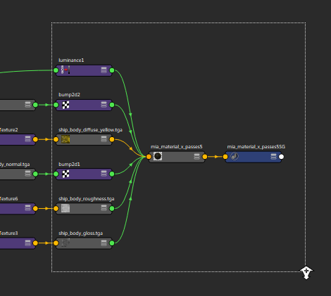

放大
可以使用以下方法之一放大“节点编辑器”(Node Editor)：
- 框选缩放：按住 Ctrl + Alt 键的同时使用鼠标左键进行移动（从左到右），以创建一个要放大的选取框。
拖动框形状时，放大  图标将显示在右下角，表明您正在放大。

- 选择“视图 > 放大”(View > Zoom In)
- 使用热键 =
缩小
可以使用以下方法之一缩小“节点编辑器”(Node Editor)：
在鼠标光标附近缩放
您可以通过执行下列任一操作在鼠标光标周围进行缩放：
- 使用鼠标滚轮。鼠标位置将用作缩放点。在移动滚轮的同时移动鼠标，缩放点会更改。
- 按住 Alt + 单击鼠标右键。缩放点是按鼠标右键时的鼠标位置。